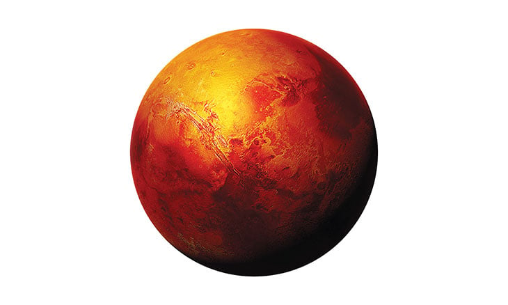

كوكب المريخ هو الكوكب الرابع من الشمس ويُعرف بالكوكب الأحمر بسبب لونه المميز الناجم عن وجود أكسيد الحديد على سطحه. يعتقد العلماء أنه كان يحتوي على مياه في الماضي، مما يثير اهتمام الباحثين في إمكانية وجود حياة عليه.